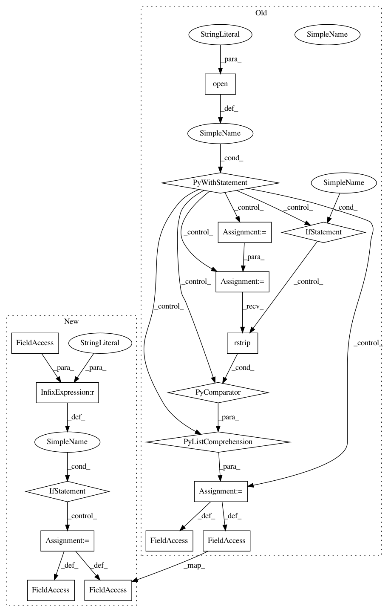

70e4855f5608c4481dfffd5f762e310d631d06c3,test_model_CAM.py,,,#,68
Before Change
modelID = 1
// load category
with open("category_momentsv1.txt") as f:
categories = [line.rstrip() for line in f.readlines()]
// load the labels
model = load_model(modelID, categories)
// load the model
features_blobs = []
// load the transformer
tf = returnTF() // image transformer
// get the softmax weight
params = list(model.parameters())
weight_softmax = params[-2].data.numpy()
weight_softmax[weight_softmax<0] = 0
// load the test image
if os.path.exists("test.jpg"):
os.remove("test.jpg")
img_url = "http://places2.csail.mit.edu/imgs/demo/IMG_5970.JPG"
os.system("wget %s -q -O test.jpg" % img_url)
img = Image.open("test.jpg")
input_img = V(tf(img).unsqueeze(0), volatile=True)
// forward pass
logit = model.forward(input_img)
h_x = F.softmax(logit, 1).data.squeeze()
probs, idx = h_x.sort(0, True)
print("RESULT ON " + img_url)
// output the prediction of action category
print("--Top Actions:")
for i in range(0, 5):
print("{:.3f} -> {}".format(probs[i], categories[idx[i]]))
// generate class activation mapping
print("Class activation map is saved as cam.jpg")
CAMs = returnCAM(features_blobs[0], weight_softmax, [idx[0]])
// render the CAM and output
img = cv2.imread("test.jpg")
height, width, _ = img.shape
heatmap = cv2.applyColorMap(cv2.resize(CAMs[0],(width, height)), cv2.COLORMAP_JET)
result = heatmap * 0.4 + img * 0.5
cv2.imwrite("cam.jpg", result)
After Change
return [line.rstrip() for line in f.readlines()]
if __name__ == "__main__":
parser = argparse.ArgumentParser(description="test on a single image")
parser.add_argument("--multi", dest="multi", action="store_true")
args = parser.parse_args()
// load categories and model
if args.multi:
categories = load_categories("category_multi_momentsv2.txt")
model = load_model(categories, "multi_moments_v2_RGB_resnet50_imagenetpretrained.pth.tar")
else:
categories = load_categories("category_momentsv2.txt")
model = load_model(categories, "moments_v2_RGB_resnet50_imagenetpretrained.pth.tar")
// load the model
features_blobs = []
// load the transformer
tf = returnTF() // image transformer
// get the softmax weight
params = list(model.parameters())
weight_softmax = params[-2].data
weight_softmax[weight_softmax<0] = 0
// load the test image
if os.path.exists("test.jpg"):
os.remove("test.jpg")
img_url = "http://places2.csail.mit.edu/imgs/demo/IMG_5970.JPG"
os.system("wget %s -q -O test.jpg" % img_url)
img = Image.open("test.jpg")
input_img = tf(img).unsqueeze(0)
// forward pass
logit = model.forward(input_img)
h_x = F.softmax(logit, 1).data.squeeze()
probs, idx = h_x.sort(0, True)
print("RESULT ON " + img_url)
// output the prediction of action category
print("--Top Actions:")
for i in range(0, 5):
print("{:.3f} -> {}".format(probs[i], categories[idx[i]]))
// generate class activation mapping
print("Class activation map is saved as cam.jpg")
CAMs = returnCAM(features_blobs[0], weight_softmax, [idx[0]])
// render the CAM and output
img = cv2.imread("test.jpg")
height, width, _ = img.shape
heatmap = cv2.applyColorMap(cv2.resize(CAMs[0],(width, height)), cv2.COLORMAP_JET)
result = heatmap * 0.4 + img * 0.5
cv2.imwrite("cam.jpg", result)
In pattern: SUPERPATTERN
Frequency: 3
Non-data size: 17
Instances
Project Name: metalbubble/moments_models
Commit Name: 70e4855f5608c4481dfffd5f762e310d631d06c3
Time: 2020-10-09
Author: mmonfort@mit.edu
File Name: test_model_CAM.py
Class Name:
Method Name:
Project Name: ufal/npfl114
Commit Name: c343409098b4f4b8396119d9f26e040e479a0e2b
Time: 2020-04-20
Author: milan@strakovi.com
File Name: labs/08/speech_recognition_eval.py
Class Name:
Method Name:
Project Name: metalbubble/moments_models
Commit Name: 5212f598c3d65670a0399afe0a7434e91a5556aa
Time: 2018-01-15
Author: alexandonian@gmail.com
File Name: test_model.py
Class Name:
Method Name: